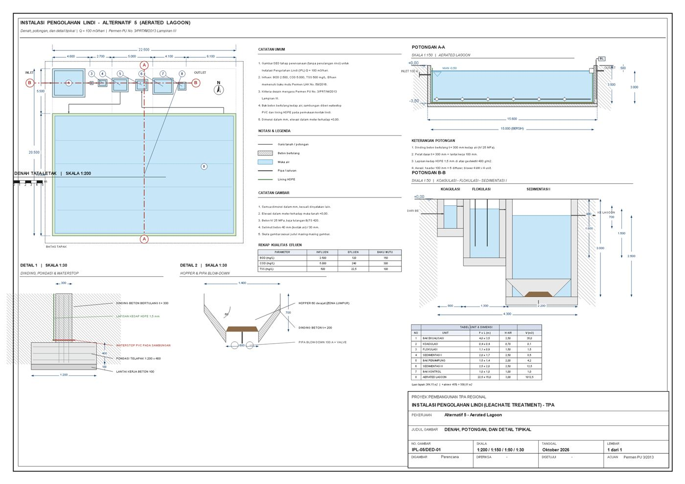
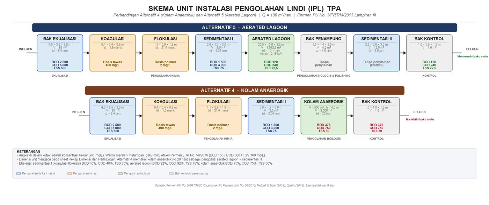
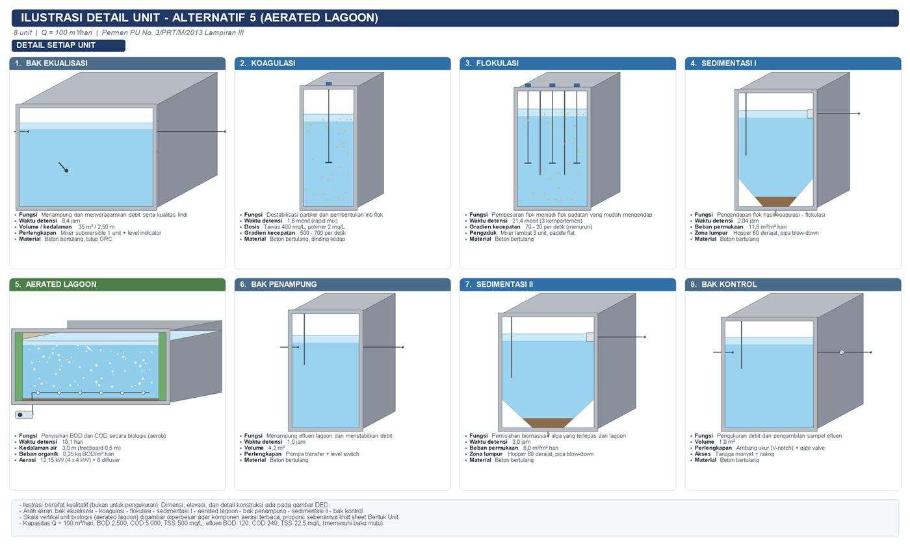

Perhitungan desain unit IPAL
80%
Teknik Lingkungan UNSIKA · Futsal
Disiplin di
lapangan,
teliti di laboratorium.
Halo, saya Naufal Fikrianto — mahasiswa Teknik Lingkungan Universitas Singaperbangsa Karawang. Saya mengerjakan desain unit pengolahan air limbah, pemetaan lingkungan, dan tetap main futsal tiap pekan.
- IPALDesain unit
- QGISPemetaan AMDAL
- 7Semester · UNSIKA
7
Futsal
Bekasi, Jawa Barat
Teknik Lingkungan
UNSIKA · Semester 7
01 — Tentang
Dua lapangan,
satu cara kerja.
Performa bukan soal satu momen besar, tapi konsistensi yang membosankan untuk dijalani.
Di Teknik Lingkungan UNSIKA saya belajar bahwa data yang rapi menyelamatkan keputusan — mirip umpan sederhana yang menyelamatkan satu serangan. Sampling air butuh ketelitian; futsal butuh keputusan cepat. Dua-duanya menuntut hal yang sama: hadir tepat waktu dan mengulang dasar sampai rapi.
Saat ini saya mengerjakan capstone redesain drainase dan IPAL lindi TPA Jalupang, Karawang, serta bertugas di divisi peta untuk penyusunan AMDAL TPS 3R. Di luar jadwal kuliah, saya bermain futsal dan sesekali mendampingi latihan.
Desain IPAL
Pemetaan QGIS
AMDAL
Excel & RAB
Futsal
Manajemen Waktu
02 — Kompetensi
Yang saya kerjakan
sehari-hari.
Penilaian pribadi atas alat dan keterampilan yang paling sering saya pakai.
Pemetaan & layout QGIS
75%
Excel: neraca massa & RAB
82%
Gambar teknis (skema & DED)
70%
03 — Proyek
Yang sedang
saya bangun.
Proyek akademik semester 7 dan prestasi di luar kelas.
-
2026
Capstone — Redesain Drainase & IPAL Lindi TPA Jalupang
Merancang sistem pengolahan lindi dengan Alternatif 5 Permen PU 2013: kriteria desain, dimensi unit koagulasi–flokulasi dan sedimentasi, neraca massa, skema proses, gambar DED, serta RAB berpatokan harga lokal Karawang.
-
2026
AMDAL TPS 3R — Divisi Peta & GIS
Menyusun peta tematik untuk dokumen AMDAL: tata guna lahan/RTRW, curah hujan, rawan banjir (InaRISK), arah angin, muka air tanah, dampak bau, dan sosial-ekonomi. Layout A3/A4 di QGIS lengkap dengan legenda, skala, dan sumber data.
-
2026
Etika Profesi — Laporan Individu (Template TSDB)
Menganalisis studi kasus etika keinsinyuran dan menyusun laporan sesuai template TSDB, termasuk penelusuran referensi kode etik.
-
2025
Futsal — [isi prestasimu di sini]
Placeholder: ganti dengan event, peran, dan hasil sebenarnya (misal juara, top scorer, atau jumlah pertandingan).
04 — Galeri
Hasil kerja, bukan
sekadar klaim.
Dokumen desain dari capstone dan peta tematik AMDAL.



Foto Futsal
05 — Kontak
Ada pertanyaan
atau tawaran tim?
Terbuka untuk diskusi seputar desain infrastruktur lingkungan, pemetaan, maupun futsal.
- Email riantonaufal8@gmail.com
- Lokasi Bekasi, Jawa Barat
- Kampus Universitas Singaperbangsa Karawang